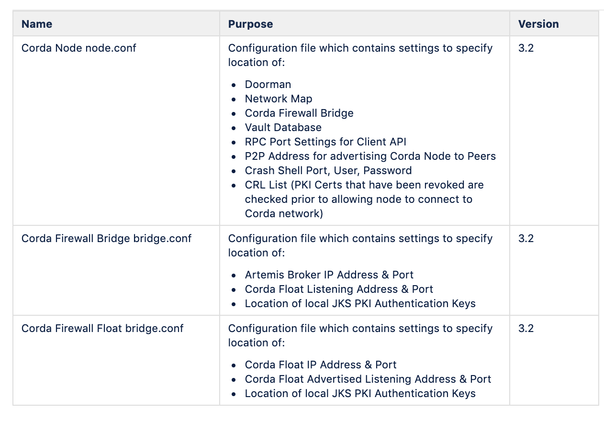
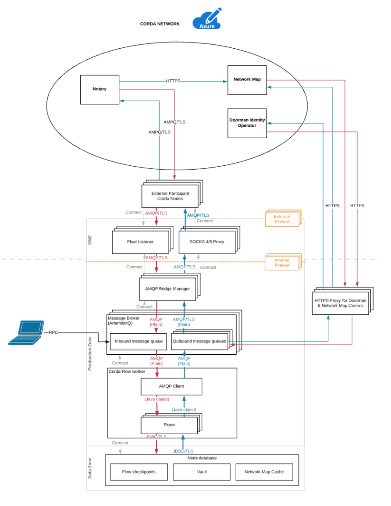
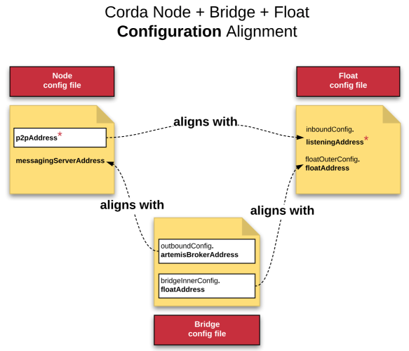

Installation and Configuration
These instructions will guide the user through the UAT & PROD configuration to deploy the following components. They are intended for firms deploying Corda Enterprise 3.2 and 3.3. There are some differences in Corda 4.0 deployment which introduces the concept of a shared Corda Firewall with multiple nodes behind it.
- Corda Node
- Corda Vault
- Corda Bridge
- Corda Float
- Load Balancer (present 1 IP to CorDapp)
- Zookeeper Cluster (manage Corda Firewall Component availability.
- HTTPS Proxy Server (Node Registration, Network Map Download)
- SOCKS5 Proxy Server (AMPQ over TLS Messaging)
There are alternative approaches to how these components are deployed. For the purposes of this document, the following diagram represents the topology used.
Non HA Corda Node, Bridge, Float

HA Corda Node, Bridge, Float
- Corda Nodes run in a Hot/Cold Setup.
- The Corda node communicates with the Doorman (authentication) and Network Map (peer addresses) over HTTPS typically thru an HTTP Proxy Server.
- The Corda node communicates with peers on the Corda network communicating with Corda Firewall which has 2 parts, Bridge & Float.
- The Float’s job is to act as an inbound socket listener, capture messages from peers and send them to the Bridge. The Float prevents the Node and Artemis server from being exposed to Peer Nodes.
- The Bridge captures the inbound messages and sends them to the shared Artemis queue. The Bridge is typically configured to route thru a SOCKS5 Proxy Server and also manages outgoing messages from the Node to Peers on the Network.
- In the HA configuration Node A and Node B use a shared Artemis queue configured on an NFS mountpoint shared between VM A and VM B.
- R3 have tested Zookeeper to provide an election mechanism to determine which Bridge is up and chooses a Bridge to send messages to the shared Artemis queue.
- The Bridge can select an Active and Alternative Artemis queue for incoming messages and an Active and Alternative Float for outgoing messages based on a configuration file setting.
- R3 customers have tested F5 Load Balancer presenting 1 Float IP to the external world for incoming Peer to Peer Traffic.
- R3 customers have also deployed Azure/F5 Load Balancers presenting 1 Node IP for RPC client connections.
- Customers could use a solution like VCS cluster for Node A to Node B failover, though this configuration has not been tested by R3.
{kind=link}
Java 8 Installation on VM
Java 8 should be installed on your Virtual Machine. Here is an example of how this would be done in Azure/AWS on Ubuntu.
> sudo add-apt-repository ppa:webupd8team/java
> sudo apt update
> sudo apt install oracle-java8-installer
These are the configuration files that will be created during the process:
{kind=link}
You can find examples of configuration files available here : https://docs.corda.r3.com/corda-bridge-component.html?highlight=node%20conf
Node Installation
- Upload the corda-3.2.jar to the node root directory.
- In the root of your node directory, create a folder called /certificates.
- R3 Operations team will provide you with a network-root-truststore.jks which will be used for authentication.
- Upload the network-root-truststore.jks file to this directory.
- In the root of your node directory, create a folder called cordapps. Upload your CorDapps to this folder.
- Check that your node directory is structured as follows:

Once your /opt/corda directory is fully created it will contain the following files & directories
additional-node-infos/
artemis/
brokers/
certificates/
cordapps/
drivers/
logs/
plugins -> drivers/
corda-3.2.jar
network-parameters
node.conf
nodeInfo-XXXXXXXXX
This is a sample node.conf which connects to the Corda UAT Network.
{
"baseDirectory" : ".",
"compatibilityZoneURL" : "https://map.testnet.corda.network",
"emailAddress" : "xxxxx@email.com",
"jarDirs" : [
"plugins",
"cordapps"
],
"keyStorePassword" : "MYPASSWORD",
"myLegalName" : " MYLEGALNAME",
"p2pAddress" : "0.0.0.0:10002",
"networkServices" : {
"doormanURL" : "https://doorman.uat.corda.network/3FCF6CEB-20BD-4B4F-9C72-1EFE7689D85B",
"networkMapURL" : "https://netmap.uat.corda.network/3FCF6CEB-20BD-4B4F-9C72-1EFE7689D85B"
},
//Azure SQL
//Microsoft SQL Server 2017
"dataSourceProperties" : {
"dataSource" : {
"url" : "jdbc:sqlserver://SERVER:1433;database=DATABASENAME;encrypt=true;trustServerCertificate=false;hostNameInCertificate=*.database.windows.net;loginTimeout=30;",
"user" : "user",
"password" : "password"
},
"dataSourceClassName" : "com.microsoft.sqlserver.jdbc.SQLServerDataSource"
},
// postGres 9.6 RDBMS
"dataSourceProperties" : {
"dataSource" : {
"url" : "jdbc:postgresql://SERVER:5432/DATABASENAME",
"user" : "user",
"password" : "password"
},
"dataSourceClassName" : "org.postgresql.ds.PGSimpleDataSource"
},
// Oracle 11gR2/12cR2 RDBMS
"dataSourceProperties" : {
"dataSourceClassName" : "oracle.jdbc.pool.OracleDataSource",
"dataSource" : {
"url" : "jdbc:oracle:thin:@SERVERNAME:1521/DATABASENAME",
"user" : "user",
"password" : "password"
},
},
"database" : {
"runMigration" : "true",
"schema" : "dbo",
"transactionIsolationLevel" : "READ_COMMITTED"
},
"rpcSettings" : {
"address" : "0.0.0.0:10003",
"adminAddress" : "0.0.0.0:10004"
},
"rpcUsers" : [
{
"password" : "test1",
"user" : "user1",
"permissions" : [ "ALL" ]
}
],
"trustStorePassword" : "PASSWORD",
"sshd" : {
"port" : "2222"
"tlsCertCrlDistPoint" : "http://crl.uat.corda.network/nodetls.crl",
"tlsCertCrlIssuer" : "CN=Corda TLS CRL Authority,OU=Corda UAT,O=R3 HoldCo LLC,L=New York,C=US",
},
}
Corda Firewall PKI Implementation
In a bank environment there will typically be several layers of security protecting the firms data.
{kind=link}
Network Authentication
- The Corda Node may be deployed behind the inner DMZ (no access to the Internet)
- The Bridge Server may reside on a VM in front of the inner DMZ (not addressable from the Internet)
- The Corda Float may reside on a VM in the Outer DMZ (directly addressable from the Internet)
PKI Authentication
- Corda PKI Authentication issued by Corda Network can link the Node and Bridge i.e. the red keys indicated below truststore and sslkeystore
- Local PKI Authentication issued by separate CA will link the Bridge and Float i.e the purple keys indicated below trust and bridge.
{kind=link}
The key thing is to look at this from the perspective of a bank implementing these Corda and Local PKI keys.
- Corda PKI Authentication will link the Node and Bridge and authenticate to Corda Network in the outside world. In other words, this permits mutual authentication between a Corda Node and its Peer Corda Nodes.
- Local PKI Authentication will link the Bridge and Float and allow a secure tunnel into the Float from the outside world. In other words, this permits mutual authentication between two software components, the Bridge and the Float.
Explanation of PKI Keys
Node Authentication
truststore.jks - this is the same trust store that the node is bootstrapped with during initial registration. It contains the cordarootca certificate - this is the public, root certificate of the entire network. It needs to be copied to the bridge when it is setup. Note that the truststore is also dynamically copied from the bridge to the float at runtime (and is held in memory only on the float). The truststore is used for authenticating nodes that connect to the bridge (& float).
Node to Bridge Connection
sslkeystore.jks is issued by the Node and contains just the node’s TLS certificate. It needs to be installed on the node and the bridge. The node-to-bridge connection is mutually authenticated TLS, with sslkeystore used both sides to establish the secure tunnel. (truststore.jks is required on each side to authenticate the connection).
Bridge to Float Connection
bridge.jks & float.jks contain TLS certificates their associated private keys. By convention they should be referred to as keystores. These TLS certificates are unrelated to any of the certificates issued by the node. In our example documentation the bridge & float keys are issued by a stand-alone root certificate. This root certificate is stored in trust.jks. This is required for the bridge and float to authenticate each other
Generate Bridge and Float Keystores
- In the root of your Corda node directory cd to /opt/corda/temp
- Create a script called keygen.sh and copy the keytool commands from the code block below.
- In /opt/corda/temp run chmod 755 keygen.sh
- In /opt/corda/temp run keygen.sh
The following keys will be generated:
bridge.jks bridge.pem bridgechain.pem float.jks float.pem floatca.jks floatchain.pem root.pem trust.jks
The important keys are bridge.jks, float.jks, trust.jks.
#!/bin/bash
keytool -genkeypair -keyalg EC -keysize 256 -alias floatroot -validity 1000 -dname "CN=Float Root,O=Local Only,L=London,C=GB" -ext bc:ca:true,pathlen:1 -keystore floatca.jks -storepass capass -keypass cakeypass
sleep 3
keytool -genkeypair -keyalg EC -keysize 256 -alias bridgecert -validity 1000 -dname "CN=Bridge Local,O=Local Only,L=London,C=GB" -ext bc:ca:false -keystore bridge.jks -storepass bridgepass -keypass bridgepass
sleep 3
keytool -genkeypair -keyalg EC -keysize 256 -alias floatcert -validity 1000 -dname "CN=Float Local,O=Local Only,L=London,C=GB" -ext bc:ca:false -keystore float.jks -storepass floatpass -keypass floatpass
sleep 3
keytool -exportcert -rfc -alias floatroot -keystore floatca.jks -storepass capass -keypass cakeypass > root.pem
sleep 3
keytool -importcert -noprompt -file root.pem -alias root -keystore trust.jks -storepass trustpass
sleep 3
keytool -certreq -alias bridgecert -keystore bridge.jks -storepass bridgepass -keypass bridgepass |keytool -gencert -ext ku:c=dig,keyEncipherment -ext: eku:true=serverAuth,clientAuth -rfc -keystore floatca.jks -alias floatroot -storepass capass -keypass cakeypass > bridge.pem
sleep 3
cat root.pem bridge.pem >> bridgechain.pem
sleep 3
keytool -importcert -noprompt -file bridgechain.pem -alias bridgecert -keystore bridge.jks -storepass bridgepass -keypass bridgepass
sleep 3
keytool -certreq -alias floatcert -keystore float.jks -storepass floatpass -keypass floatpass |keytool -gencert -ext ku:c=dig,keyEncipherment -ext: eku:true=serverAuth,clientAuth -rfc -keystore floatca.jks -alias floatroot -storepass capass -keypass cakeypass > float.pem
sleep 3
cat root.pem float.pem >> floatchain.pem
sleep 3
keytool -importcert -noprompt -file floatchain.pem -alias floatcert -keystore float.jks -storepass floatpass -keypass floatpass
A full guide to the creation and deployment of these keys can be found here : https://docs.corda.r3.com/bridge-configuration-file.html
Bridge Installation
- Upload the {{corda-bridgeserver-3.2.jar}} to the /opt/cordabridge directory.
- In the /opt/cordabridge directory, create a softlink called {{certificates}} linked to /opt/corda/certificates
- In the /opt/cordabridge directory, make a directory called bridgecerts
- In the /opt/cordabridge directory, copy /opt/corda/network-parameters back to /opt/cordabridge
- In the /opt/cordabridge directory, create a file called bridge.conf
- Copy the files /opt/corda/temp/bridge.jks and /opt/corda/temp/trust.jks into the /opt/cordabridge/bridgecerts directory
This is a sample bridge.conf:
//
// R3 Proprietary and Confidential
//
// Copyright (c) 2018 R3 Limited. All rights reserved.
//
// The intellectual and technical concepts contained herein are proprietary to R3 and itssuppliers and are protected by trade secret law.
//
// Distribution of this file or any portion thereof via any medium without the express permission of R3 is strictly prohibited.
bridgeMode = BridgeInner
outboundConfig : {
artemisBrokerAddress = "hostname-where-corda-node-is-running:11005"
// alternateArtemisBrokerAddresses = [ "backup-hostname-where-corda-node-is-running:11005" ]
}
bridgeInnerConfig : {
floatAddresses = ["hostname-where-float-is-running:12005"]
// floatAddresses = ["hostname-where-float-is-running:12005", "backup-hostname-where-float-is-running:12005"]
expectedCertificateSubject = "CN=Float Local,O=Local Only,L=London,C=GB"
customSSLConfiguration : {
keyStorePassword = "bridgepass"
trustStorePassword = "trustpass"
sslKeystore = "./bridgecerts/bridge.jks"
trustStoreFile = "./bridgecerts/trust.jks"
crlCheckSoftFail = true
}
}
networkParametersPath = network-parameters
Float Installation
- Create an /opt/cordafloat directory on your VM
- Upload the {{corda-bridgeserver-3.2.jar}} to the /opt/cordafloat directory.
- In the /opt/cordafloat directory, make a directory called floatcerts.
- In the /opt/cordafloat directory, create a file called float.conf.
- The keys were created in the Node VM so sftp from the Node VM to the Float VM and copy the files NodeVM:/opt/corda/temp/float.jks and /opt/corda/temp/trust.jks into the FloatVM:/opt/cordafloat/floatcerts directory.
- You now should have the correct non Corda PKI CA authentication in place between Bridge and Float.
This is a sample float.conf:
//
// R3 Proprietary and Confidential
//
// Copyright (c) 2018 R3 Limited. All rights reserved.
//
// The intellectual and technical concepts contained herein are proprietary to R3 and its suppliers and are protected by trade secret law.
//
// Distribution of this file or any portion thereof via any medium without the express permission of R3 is strictly prohibited.
bridgeMode = FloatOuter
inboundConfig : {
listeningAddress = "hostname-where-float-is-running:10005"
}
floatOuterConfig : {
floatAddress = "hostname-where-float-is-running:12005"
expectedCertificateSubject = "CN=Bridge Local,O=Local Only,L=London,C=GB"
customSSLConfiguration : {
keyStorePassword = "floatpass"
trustStorePassword = "trustpass"
sslKeystore = "./floatcerts/float.jks"
trustStoreFile = "./floatcerts/trust.jks"
crlCheckSoftFail = true
}
}
networkParametersPath = network-parameters
A full list of the parameters that can be utilized in these configuration files can be found here : https://docs.corda.r3.com/releases/master/corda-firewall-configuration-file.html
Corda 3.x vs Corda 4.x Firewall Upgrade
In Corda 4.x it is possible to for multiple nodes representing multiple identities to reside behind the same Corda Firewall. Details on setup can be found here : https://docs.corda.r3.com/releases/master/corda-firewall-upgrade.html
Port Policy and Network Configuration
Connections with the Corda Network Doorman and Network Map services (inbound and outbound traffic) will be over HTTP/HTTPS on ports 80 and 443.
Connections with peer Corda Nodes (including Notaries) will happen on a peer-to-peer connection using AMQP/TLS typically in a port range of 10000 - 10099, though the ports used by other nodes is determined by the node owner.
Connections with local applications connecting with the CorDapp via the Corda Node happen over RPC.
Administrative logins with the Corda Node happen via ssh whose port is configured in the node.conf file, typically port 2222.
Suggested Work flow for Corda Node & Corda Firewall Installation
- Run ifconfig on Node VM.
- Run ifconfig on Bridge VM.
- Run ifconfig on Float VM.
- Ask your Infrastructure team to tell you public IP of load balancer/firewall.
- In Node.conf p2pAddress put IP from question 4.
- In Node.conf messagingServerAddress put local IP address of Node from question 1, or 0.0.0.0 for all interfaces.
- In Bridge.conf outboundconfig put IP address of node from question 1.
- In Bridge.conf bridgeInnerConfig put IP address of 3, or ask infrastructure team what address is presented by firewall between Bridge and Float.
- In Float.conf floatOuterConfig put IP address from 3 which will be routed to from node. If machine has one NIC use that address, if it has two then use the card that has permission for access from bridge network.
- In Float.conf inboundConfig use IP address from 3 which faces the internet. If there is only one NIC use that value, if there are two check with Infrastructure which one is accessed from the load balancer.
- In Float.conf floatOuterConfig put IP address from 3 which will be routed to from node. If machine has one NIC use that address, if it has two then use the card that has permission for access from bridge network.
The following image may be helpful in ensuring alignment between the Node, Bridge and Float configuration files.
{kind=link}
* Note: p2pAddress reflects the publicly accessible address, which may or may not be the Float inboundConfig.listeningAddress. If there is an internet firewall configured in front of the Float then ask the Network Administrator for the public address that routes to the Float’s listeningAddress, and use that public address for your p2pAddress.
Proxy Configurations
You will likely need to establish proxy servers, one for HTTP connection to the Doorman and Network Map services, and Socks proxy to be used with the Corda Firewall for P2P communication Corda Nodes. Please note the examples below are for demonstration purposes only, it is assumed most financial institutions will already have Enterprise Proxy Server deployments in place and available for use by the Corda Firewall.
Using HTTP Proxy with Corda
Many financial institutions will use an HTTP Proxy Server to monitor connections going out to the Internet.
Corda facilitates the use of an HTTP Proxy to access the Doorman & Network map via HTTPS “get” requests.
The following is an example of how to set up a Squid Proxy Server and start the Corda Node to point to it as a “tunnel” to connect to Doorman and Network Map.
- Prerequisite is a VM 2 CPU Core & 2 GB RAM running Ubuntu 18.x.
- ssh into the VM where you want to install the Proxy Server and run the following:
- sudo apt update
- sudo apt -y install squid
- You should edit /etc/squid/squid.conf and add the following entries
acl SSL_ports port 443
acl Safe_ports port 8080
acl CONNECT method CONNECT
http_access allow all
http_port 8080
refresh_pattern ^ftp: 1440 20% 10080
refresh_pattern ^gopher: 1440 0% 1440
refresh_pattern -i (/cgi-bin/|\?) 0 0% 0
refresh_pattern (Release|Packages(.gz)*)$ 0 20% 2880
refresh_pattern . 0 20% 4320
debug_options ALL,3
- Once Squid is successfully installed run:
- sudo systemctl start squid
- sudo systemctl enable squid
- sudo systemctl status squid
- If Squid starts successfully you will see an output similar to this
cordaadmin@corda-firewall-proxies:~$ sudo systemctl status squid
● squid.service - LSB: Squid HTTP Proxy version 3.x
Loaded: loaded (/etc/init.d/squid; generated)
Active: active (running) since Wed 2019-03-13 18:44:10 UTC; 14min ago
Docs: man:systemd-sysv-generator(8)
Process: 14135 ExecStop=/etc/init.d/squid stop (code=exited, status=0/SUCCESS)
Process: 14197 ExecStart=/etc/init.d/squid start (code=exited, status=0/SUCCESS)
Tasks: 4 (limit: 4915)
CGroup: /system.slice/squid.service
├─14261 /usr/sbin/squid -YC -f /etc/squid/squid.conf
├─14263 (squid-1) -YC -f /etc/squid/squid.conf
├─14265 (logfile-daemon) /var/log/squid/access.log
└─14267 (pinger)
Mar 13 18:44:10 corda-firewall-proxies systemd[1]: Starting LSB: Squid HTTP Proxy version 3.
Mar 13 18:44:10 corda-firewall-proxies squid[14197]: * Starting Squid HTTP Proxy squid
Mar 13 18:44:10 corda-firewall-proxies squid[14261]: Squid Parent: will start 1 kids
Mar 13 18:44:10 corda-firewall-proxies squid[14197]: ...done.
Mar 13 18:44:10 corda-firewall-proxies systemd[1]: Started LSB: Squid HTTP Proxy version 3.x
Mar 13 18:44:10 corda-firewall-proxies squid[14261]: Squid Parent: (squid-1) process 14263
- At this point you can ssh to the VM where the Corda Node is installed and run the following:
- java -Dhttps.proxyHost=your-firewall-proxy -Dhttps.proxyPort=8080 -jar corda.jar
- If the Corda Node starts up sucessfully you can then check /var/log/squid/access.log and you should see output as follows:
1552502594.525 70615 10.1.0.30 TCP_TUNNEL/200 30087 CONNECT netmap.uat.corda.network:443 - HIER_DIRECT/51.140.164.141 -
Using Socks Proxy with Corda Bridge
R3 strongly recommend the use of an SOCKS Proxy in conjunction with the Corda Firewall to access peers on the network for P2P communication.
SOCKS is a general purpose proxy server that establishes a TCP connection to another server on behalf of a client, then routes all the traffic back and forth between the client and the server. It works for any kind of network protocol on any port. SOCKS Version 5 adds additional support for security and UDP. By contrast an HTTP Proxy only understands HTTP traffic.
SOCKS works by establishing a TCP connection with another server on the behalf of your client machine. Through this connection, traffic is routed between the client and the server, essentially anonymizing and encrypting your data and your information along the way.
SOCKS proxies provide an improvement over HTTP proxy in terms of speed of data delivery & by preventing data packets being mis-routed or mislabeled. This provides an overall improvement in terms of stability and avoiding data transfer errors that could otherwise happen.
The additional benefit of utilizing a SOCKS server is that it facilitates organizations enforce security policy and allow applications to reach legitimate external hosts through simple, centrally controlled rule-based settings.
socksProxyConfig {
version = SOCKS5
proxyAddress = "PROXYSERVER:1080"
userName = "user"
password = "password"
}